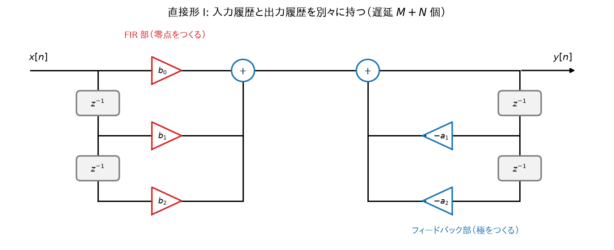
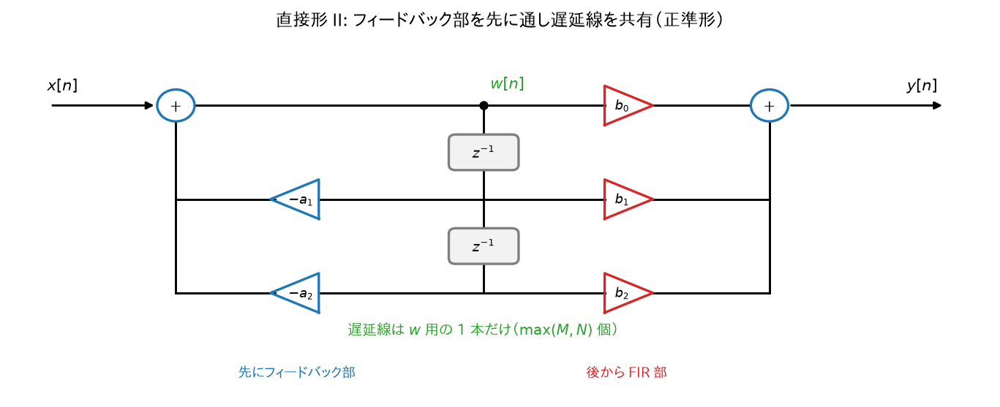
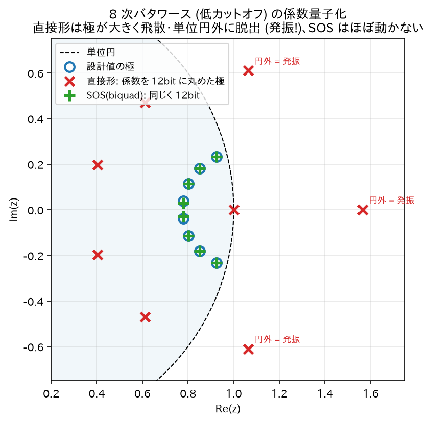
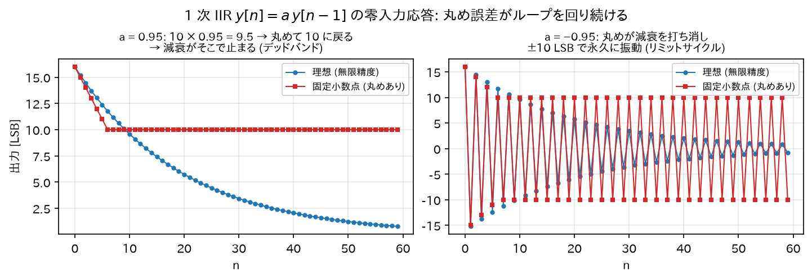

Chapter 09
IIR の実装構造と数値的な注意点
同じ伝達関数\(H(z)\)でも、計算の組み方（構造）は複数あり、 無限精度なら等価だが有限精度（浮動小数点・固定小数点）では性能が変わる。
この章がなぜ必要なのか——「紙の上では正しいのに、動かすと壊れる」を防ぐ.
08 章までで、フィルタの係数を計算できるようになった。数学的にはこれで完成である。 ところが、その係数をそのままプログラムに書くと、実際には音が壊れたり、発振したりすることがある。
理由は 1 つ。コンピュータは数を正確に扱えないから。 \(0.1\)すら 2 進数では割り切れず、わずかな誤差を抱えたまま計算される。 普通の計算ならこの誤差は無視できる。ところが IIR は自分の出力を何度もループさせるので、 小さな誤差が回り続けて増幅され、無視できない狂いに育つことがある。
この章は「数学的には同じ式でも、計算の順番と組み方を変えると誤差への強さが全く違う」という話である。 同じレシピでも、材料を入れる順番で失敗しやすさが変わるのに似ている。 結論だけ先に言うと——高次のフィルタは必ず 2 次ずつに分けて実装せよ。理由を以下で見る。
1. 直接形 I (Direct Form I)
差分方程式をそのまま実装した形:

- 前半（\(b_k\)側）= 零点を作る FIR 部、後半（\(a_k\)側）= 極を作るフィードバック部。
- 遅延メモリが\(M + N\)個必要（入力履歴と出力履歴を別々に持つ）。
- 素直で頑健。固定小数点オーディオでは今でも定番。
2. 直接形 II (Direct Form II) — 遅延メモリの節約
導出
\(H(z)\)を「フィードバック部 → FIR 部」の縦続として書き直す:
畳み込みの可換性・結合性（03 章で導出）より、\(H_2 \cdot H_1\)の順でも\(H_1 \cdot H_2\)の順でも全体は同じ。 そこで先にフィードバック部\(H_1\)を通すことにし、中間信号を\(w[n]\)とする:
2 つの式はどちらも\(w\)の過去値だけを参照する。よって遅延線は\(w\)用の 1 本 （\(\max(M, N)\)個）で済む。これが直接形 II（canonical form: 最小遅延数の意味で正準形）。

注意
直接形 II は中間信号\(w[n]\)に極の共振がフィルタされずに直撃するため、 内部でオーバーフローしやすい（入力・出力が小さくても\(w\)が大きくなり得る）。 浮動小数点では通常問題ないが、固定小数点では直接形 I か転置形が選ばれることが多い。
転置形 (Transposed Direct Form II)
信号の流れをすべて逆向きにし、分岐と加算を入れ替えても伝達関数は変わらない（転置定理）。 得られる転置形 II は浮動小数点実装で最も広く使われる:
（biquad の場合。状態変数\(s_1, s_2\)の 2 個だけで済み、数値特性も良好。 SciPy の lfilter や多くのオーディオライブラリの内部実装がこれ。）
3. 縦続形(biquad カスケード) — 高次 IIR の標準実装
なぜ高次を 1 つの直接形で実装してはいけないのか
要点を先に. 8 次のフィルタを「8 次の式」のまま 1 個で実装すると、 係数のごくわずかな誤差（小数点以下 4 桁目とか）で極が大きく吹き飛んで発振する。 ところが同じフィルタを「2 次 × 4 段」に分けて実装すると、同じ誤差でもびくともしない。 数学的には完全に同じフィルタなのに、である。なぜそんなことが起きるのか。
\(N\)次の分母多項式\(1 + a_1 z^{-1} + \cdots + a_N z^{-N}\)の根（極）の位置は、係数の微小誤差に対して 次数が上がるほど極端に敏感になる。
直感的な理由: 多項式の根は係数の複雑な非線形関数であり、高次では 「係数が 0.1% ずれただけで根が大きく動く」悪条件が生じる（Wilkinson 多項式が有名な実例）。 特に IIR では極が単位円ギリギリに配置されがちなので、 係数の量子化（例: float32 への丸め）で極が単位円の外に押し出されて発振する事故が起きる。
解決: 2 次ずつに分けて縦続する
\(H(z)\)を極・零点の共役対ごとに biquad へ分解する:
（03 章の結合性より、縦続接続の全体特性は各段の積。分解は数学的に厳密に等価。）
- 各 biquad の係数はその段の 1 対の極だけを決めるので、量子化誤差の影響がその段に局所化される。
- 2 次の極位置は係数から直接読める（06 章:\(|p|^2 = a_2\),\(2\mathrm{Re}(p) = -a_1\)）ので、 安定性の検査・保証（安定三角形）も段ごとに簡単。
実務の鉄則: 3 次以上の IIR は必ず biquad（+ 必要なら 1 次セクション）のカスケードで実装する。 SciPy で
butter(8, ...)を使うときもoutput='sos'（second-order sections）を指定し、sosfiltで流すのが標準プラクティス。output='ba'の高次係数は次数が上がると簡単に破綻する。
# 推奨パターン (SciPy)
from scipy.signal import butter, sosfilt
sos = butter(8, 1000, btype='low', fs=48000, output='sos') # 8次 = biquad 4段
y = sosfilt(sos, x)
4. 量子化に起因する現象
(a) 係数量子化
設計した係数を有限ビットに丸めると極・零点が設計位置からずれる。 → 特性の変形、最悪の場合は不安定化。対策: biquad 分解、倍精度で設計、係数感度の低い構造。
(b) 丸め誤差の蓄積とリミットサイクル
各サンプルの積和演算で生じる丸め誤差は、FIR なら出力に一度混ざって終わりだが、 IIR ではフィードバックループを回って再入力され続ける。
固定小数点実装では、入力が 0 になった後も丸め誤差が自己再生して 小さな発振が永久に残るリミットサイクルが起きることがある （例: 出力が …, +1LSB, −1LSB, +1LSB, … と振動し続ける）。 対策: 誤差フィードバック（error feedback / noise shaping）、ディザ、浮動小数点の採用。

(c) 極が単位円に近いときの一般的注意
カットオフがナイキストに比べて極端に低い（例:\(f_s = 48\)kHz で\(f_c = 20\)Hz）と、 極が\(z = 1\)の至近距離に来て、\(1 - a\)型の係数が桁落ちする。 float32 では特性が崩れることがあり、倍精度状態変数や SVF（state variable filter）構造への 置き換えが定石。
5. 実装チェックリスト
- ☐ 3 次以上は SOS（biquad カスケード）に分解したか
- ☐ 各段の係数が安定三角形の内側にあるか（\(|a_2| < 1\),\(1 \pm a_1 + a_2 > 0\)）
- ☐ 状態変数の初期化（ゼロクリア or 過渡応答対策）をしたか
- ☐ 係数を実行時に変化させる場合、変化中も安定か・ジップノイズは許容範囲か
- ☐ 固定小数点なら: 内部ワード長、オーバーフロー対策（飽和演算）、リミットサイクル対策
- ☐ 位相の非線形性がアプリケーション上問題ないか（問題なら FIR か零位相フィルタリング
filtfiltを検討）
6. 学習のまとめ — IIR 理解の全体像
| 章 | 核心 |
|---|---|
| サンプリング (01) | 信号を数列にする。周波数は \(\omega=2\pi f/f_s\)、意味があるのは \(0\)〜\(\pi\) |
| 複素指数 (02) | \(e^{j\omega n}\) は LTI の固有関数。フィルタ = 各周波数に複素倍率を掛ける装置 |
| 畳み込み (03) | LTI は \(h[n]\) で完全記述。安定 ⟺ \(\sum\lvert h\rvert < \infty\) |
| DTFT (04) | 周波数特性の定義。畳み込み ↔ 掛け算 |
| Z 変換 (05) | \(z^{-1}\) = 1 サンプル遅延。有理関数と部分分数展開が IIR の言語 |
| 伝達関数と極零点 (06) | 差分方程式 ↔ \(H(z)\) ↔ \(h[n]\)。極 = 共振と余韻、零点 = ノッチ。安定 ⟺ 全極が単位円内 |
| IIR 本体 (07) | フィードバック → 無限の余韻。低次数で急峻な特性。biquad が実用単位 |
| 設計 (08) | アナログ理論（バタワース等）+ 双一次変換（台形則、\(\Omega=(2/T)\tan(\omega/2)\)） |
| 実装 (09) | SOS カスケード一択。量子化と極の感度に注意 |
これで「IIR フィルタとは何か・なぜ動くか・どう設計しどう実装するか」の一通りが、 すべての式の導出付きで追えるようになっている。